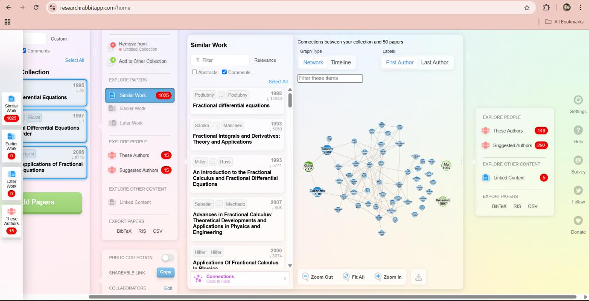

Prepared By: Priyanka
Chitkara University Institute of Engineering and Technology, Punjab
What is Artificial Intelligence? It is a branch of Computer Science that pursues creating the computers or machines as intelligent as human beings. It is the science and engineering of making intelligent machines, especially intelligent computer programs. It is related to the similar task of using computers to understand human intelligence, but AI does not have to confine itself to methods that are biologically observable Definition: Artificial Intelligence is the study of how to make computers do things, which, at the moment, people do better. According to the father of Artificial Intelligence, John McCarthy, it is “The science and engineering of making intelligent machines, especially intelligent computer programs”. Artificial Intelligence is a way of making a computer, a computer-controlled robot, or a software think intelligently, in the similar manner the intelligent humans think. AI is accomplished by studying how human brain thinks and how humans learn, decide, and work while trying to solve a problem, and then using the outcomes of this study as a basis of developing intelligent software and systems. It has gained prominence recently due, in part, to big data, or the increase in speed, size and variety of data businesses are now collecting. AI can perform tasks such as identifying patterns in the data more efficiently than humans, enabling businesses to gain more insight out of their data. From a business perspective AI is a set of very powerful tools, and methodologies for using those tools to solve business problems. From a programming perspective, AI includes the study of symbolic programming, problem solving, and search. AI Vocabulary Intelligence relates to tasks involving higher mental processes, e.g. creativity, solving problems, pattern recognition, classification, learning, induction, deduction, building analogies, optimization, language processing, knowledge and many more. Intelligence is the computational part of the ability to achieve goals. Intelligent behaviour is depicted by perceiving one’s environment, acting in complex environments, learning and understanding from experience, reasoning to solve problems and discover hidden knowledge, applying knowledge successfully in new situations, thinking abstractly, using analogies, communicating with others and more. 4 Science based goals of AI pertain to developing concepts, mechanisms and understanding biological intelligent behaviour. The emphasis is on understanding intelligent behaviour. Engineering based goals of AI relate to developing concepts, theory and practice of building intelligent machines. The emphasis is on system building. AI Techniques depict how we represent, manipulate and reason with knowledge in order to solve problems. Knowledge is a collection of ‘facts’. To manipulate these facts by a program, a suitable representation is required. A good representation facilitates problem solving. Learning means that programs learn from what facts or behaviour can represent. Learning denotes changes in the systems that are adaptive in other words, it enables the system to do the same task(s) more efficiently next time. Applications of AI refers to problem solving, search and control strategies, speech recognition, natural language understanding, computer vision, expert systems, etc. Problems of AI: Intelligence does not imply perfect understanding; every intelligent being has limited perception, memory and computation. Many points on the spectrum of intelligence versus cost are viable, from insects to humans. AI seeks to understand the computations required from intelligent behaviour and to produce computer systems that exhibit intelligence. Aspects of intelligence studied by AI include perception, communicational using human languages, reasoning, planning, learning and memory. The following questions are to be considered before we can step forward: 1. What are the underlying assumptions about intelligence? 2. What kinds of techniques will be useful for solving AI problems? 3. At what level human intelligence can be modelled? 4. When will it be realized when an intelligent program has been built?
| Date | Name | Learned Topics | Feedback | |
|---|---|---|---|---|
| 4-2-2025 | Arshdeep Kaur | arshdeep0051.becse24@chitkara.edu.in | Laplace and many more topics | Nothing |
| 4-2-2025 | Aryan | aryan0866.becse24@chitkara.edu.in | Revision of all previous concepts | All good |
Research Rabbit helped identify application-based papers such as:
The experience broadened the focus from pure theory to interdisciplinary applications in public health, finance, and control theory.
